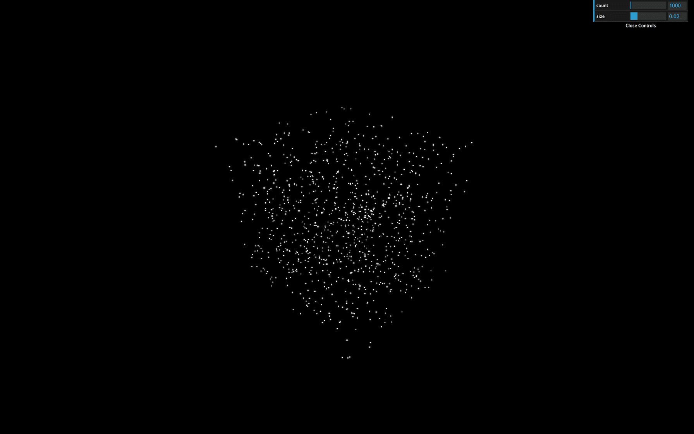

Now that we know how to use particles, we could create something cool like a Galaxy. But instead of producing just one galaxy, let's do a galaxy generator.
For that, we're going to use Dat.GUI to let the user tweak the parameters and generate a new galaxy on each change.
The starter is only composed of a cube in the middle of the scene. It ensures that everything is working.
First, remove the cube and create a generateGalaxy function. Each time we call that function, we will remove the previous galaxy (if there is one) and create a new one.
We can call that function immediately:
We can create an object that will contain all the parameters of our galaxy. Create this object before the generateGalaxy function. We will populate it progressively and also add each parameter to Dat.GUI:
In our generateGalaxy function, we're going to create some particles just to make sure that everything is working. We can start with the geometry and add the particles count to the parameters:
That's the same code as before, but we handled the loop a little differently.
We can now create the material by using the PointsMaterial class. This time again, we can add tweaks to the parameters object:
Finally, we can create the points by using the Points class and add it to the scene:
You should see few points floating around.
We have already two parameters, count and size. Let's add them to the Dat.GUI instance that we already created at the start of the code. As you can imagine, we must add those tweaks after creating the parameters:

You should have two new ranges in the tweaks but changing them doesn't generate a new galaxy. To generate a new galaxy, you must listen to the change event. More precisely to the finishChange event to prevent generating galaxies while you are drag and dropping the range value:
This code won't work because the generateGalaxy doesn't exist yet. You must move those tweaks after the generateGalaxy function.
Be careful, we still have a problem, and if you play too much with the tweaks, your computer will start to heat. It's because we didn't destroy the previously created galaxy. We are creating galaxies one above the other.
To make things right, we must first move the geometry, material and points variables outside the generateGalaxy.
Then, before assigning those variables, we can test if they already exist. If so, we can call the dispose() method on the geometry and the material. Then remove the points from the scene with the remove() method:
Instead of using a texture that can create depth and alpha issues as we saw in the previous lesson, we will just let the default square shape. Don't worry; there will be so many small particles that we won't notice that they are squares.
Now that we can estimate how much particles we can have and their size, let's update the parameters:
Galaxies can have several different shapes. We will focus on the spirals one. There are many ways to position the particles to create a galaxy. Feel free to try your way before testing the lesson way.
First, let's create a radius parameter:
Each star will be positioned accordingly to that radius. If the radius is 5, the stars will be positioned at a distance from 0 to 5. For now, let's position all the particles on a straight line:
Spin galaxies always seem to have at least two branches, but it can have much more.
Create a branches parameter:
We can use Math.cos(...) and Math.sin(...) to position the particles on those branches. We first calculate an angle with the modulo (%), divide the result by the branches count parameter to get an angle between 0 and 1, and multiply this value by Math.PI * 2 to get an angle between 0 and a full circle. We then use that angle with Math.cos(...) and Math.sin(...) for the x and the z axis and we finally multiply by the radius:
Let's add the spin effect.
Create a spin parameter:
Then we can multiply the spinAngle by that spin parameter. To put it differently, the further the particle is from the center, the more spin it'll endure:
Those particles are perfectly aligned. We need randomness. But what we truly need is spread stars on the outside and more condensed star on the inside.
Create a randomness parameter:
Now create a random value for each axis with Math.random(), multiply it by the radius and then add those values to the postions:
It's working but it's not very convincing, right? And we can still see the pattern. To fix that, we can use Math.pow() to crush the value. The more power you apply, the closest to 0 it will get. The problem is that you can't use a negative value with Math.pow(). What we will do is calculate the power then multiply it by -1 randomly.
First create the power parameter:
Then apply the power with Math.pow() and multiply it by -1 randomly:
For a better effect, we need to add some colors to our creation. A cool thing would be to have different colors inside the galaxy and on its edges.
First, add the colors parameters:
We're going to provide a color for each vertex. We must active the vertexColors on the material:
Then add a color attribute on our geometry just like we added the position attribute. For now, we're not using the insideColor and outsideColor parameters:
You should get a red galaxy.
To use the colors from the parameters, we first need to create a Color instance for each one. We have to do it inside the generateGalaxy function for reasons you'll understand in a bit:
Inside the loop function, we want to mix these colors into a third color. That mix depends on the distance from the center of the galaxy. If the particle is at the center of the galaxy, it'll have the insideColor and the further it gets from the center, the more it will get mixed with the outsideColor.
Instead of creating a third Color, we are going to clone the colorInside and then use the lerp(...) method to interpolate the color from that base color to another one. The first parameter of lerp(...) is the other color, and the second parameter is a value between 0 and 1. If it's 0, the color will keep its base value, and if it's 1 the result color will be the one provided. We can use the radius divided by the radius parameter:
We can then use the r, g and b properties in our colors array:
And here you have a beautiful galaxy generator. You can play with the tweaks and continue to add parameters and improve the style of your galaxies.
Try not to burn your computer.
To go further, you can try to add more tweaks or test other galaxy shapes. We will learn how to animate all the particles in a cool spin animation in a future lesson.